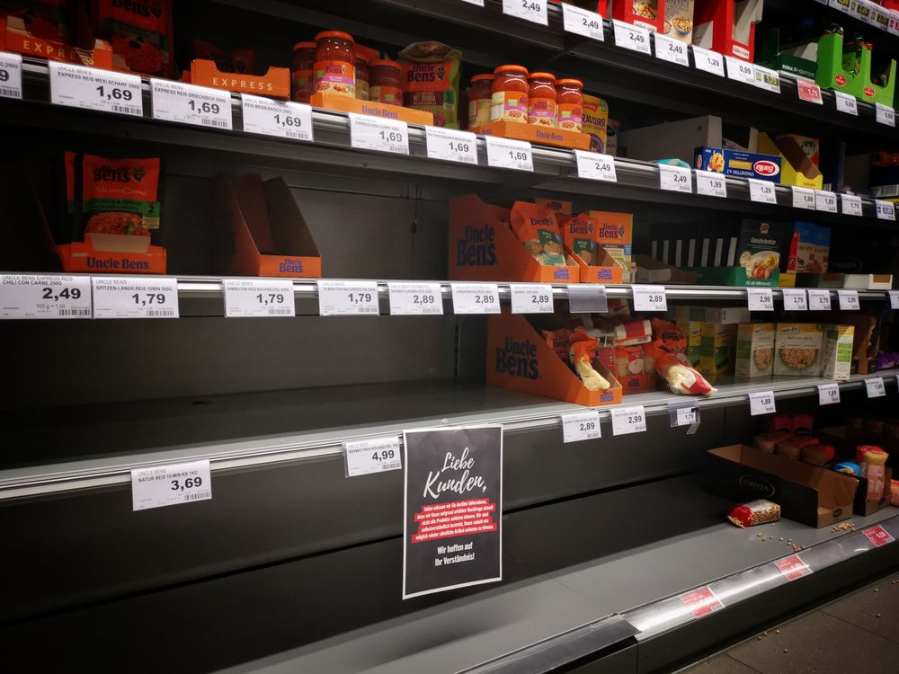

"It still works, so why change it?"
That sentence is the most expensive thing in your shop. Not the rent, not the salaries, not the electricity bill — that sentence. Because a basic cash register does exactly one thing: it records the sale you just made. It cannot tell you what you are losing, what you are about to run out of, who owes you money, or which products are quietly draining your profits. And by the time you feel those losses in your pocket, the register will still be sitting there, looking perfectly fine, saying nothing.
Every shop that upgraded its billing system says the same thing afterwards: "I should have done this two years earlier." Here are the 7 signs that it is already time for yours.
Sign 1: Billing Is the Bottleneck, Not the Customers
Watch your counter during evening rush. If customers are standing in line while your cashier punches prices on a calculator or hunts for a price list, the problem is not "too many customers." The problem is that each bill takes two or three minutes when it should take thirty seconds.
During rush hour, slow billing does something worse than annoy people — it caps your sales. A counter that finishes one customer every 2 minutes serves 30 customers an hour. Cut that to 45 seconds with barcode scanning and you serve 80. Same shop, same staff, same evening — more than double the customers walked out with full bags instead of walking out of the queue.
This is exactly why so many shops are switching to proper billing software in 2026: the counter stops being the choke point and starts being the engine.

Sign 2: You Run Out of Stock Without Warning
It always happens the same way. A regular customer asks for a popular item. You walk to the shelf — empty. "Sir, kal aa jaye ga," you say, and you mean it. But you lost today's sale, and worse, you trained a loyal customer to check your competitor first next time.
A cash register cannot warn you that stock is running low because it has no idea what your stock is. It never counted it. When your shop was tiny, your eyes were the inventory system — you could glance at the shelves and know. But once you carry hundreds of products, your eyes stop being a system. Stock-outs stop being bad luck and start being a regular expense.
Modern billing software deducts stock automatically with every sale and warns you before items run out. Read our stock management guide for small shops to see how much money predictable stock alone is worth.

Sign 3: Your Udhar Lives in a Notebook
Every Pakistani shopkeeper knows the notebook. The one with customer names, amounts, dates in the margins, crossed-out entries, arrows, and your staff's handwriting mixed with yours. It worked when five people took udhar. It does not work when fifty people do.
Here is what the notebook cannot do: it cannot remind you that Ahmed's payment was due last Tuesday. It cannot tell you which customer already crossed their limit. It cannot stop your cashier from giving udhar to someone you blacklisted. And it definitely cannot survive a cup of chai, a torn page, or a disagreement about what was written there three months ago.
Udhar is not a small side issue — it is often 20 to 30% of a shop's money, sitting outside the shop. Digital khata tracks every rupee, sets credit limits, and reminds you to follow up. Our udhar management guide shows the exact rules that recover every rupee — and they all start with getting it out of the notebook.
Sign 4: Closing the Day Takes an Hour (and You Still Don't Trust the Number)
Be honest: when was the last time you closed your day feeling confident about the numbers? The typical cash-register routine goes like this — count the cash in the drawer, try to remember the day's udhar, subtract what you paid the supplier this morning, compare it against a gut feeling of "acha din tha," and go home vaguely unsure whether something is off.
That hour of counting is not diligence; it is manual labor that a computer does in ten seconds. And the bigger problem is what you never find out: was today actually better than last Tuesday? Which hours sold the most? Did the new product line earn its shelf space? A cash register hands you a total. Billing software hands you answers. There is a reason successful shopkeepers treat day closing as a 10-minute profit habit — because the right system makes it that fast.
Sign 5: You Suspect Leakage but Can't Prove Anything
This is the uncomfortable one. Cash sales happen fast, change is given quickly, and between opening and closing, money moves in ways nobody fully tracks. Maybe the cashier pockets a small amount now and then. Maybe "discounts" are given to friends a little too generously. Maybe nobody is stealing at all and your margins just feel thinner than they should.
The painful part is not the suspicion — it is the helplessness. A cash register cannot show you that your top-selling item sells 40 units when it is recorded 35. It cannot flag the unusual number of "voided" sales. It cannot tie each sale to the staff member who made it. So the suspicion just sits there, poisoning your relationship with people you need to trust.
Proper billing software gives every cashier their own login, logs every bill, every void, every discount. Theft usually stops not because anyone gets caught, but because everyone knows the system is watching. Our guide to preventing staff theft covers the full picture — but the foundation is always the same: record everything, automatically.
Sign 6: Customers Ask for Things You Can't Give Them
Notice how customer expectations have changed. People now ask for a proper itemized receipt — especially for returns, for company expenses, for warranty claims. "Bhai, bill bana dein, item-wise." With a basic register, you hand them a slip with one total, or nothing at all. They notice. And in their mind, the shop with proper receipts is the professional one.
It goes further than receipts. Customers increasingly expect you to check stock for them ("kitne piece available hain?"), to return an item days later without a fight, to honor the price they saw yesterday. Every one of these moments is a small test of trust, and a register fails every one of them. Software passes them without thinking: search the product, print the detailed bill, look up the old sale for the return. Each tiny "yes, of course" is a customer who comes back.
Sign 7: Your Growth Plans Die at "But Our System Can't Handle That"
This is the sign shopkeepers feel last, but it costs the most. You think about adding a second counter — but then billing chaos doubles. You consider opening a second branch — but then stock and cash become unmanageable across two locations. You want to start taking online orders or WhatsApp orders — but your billing lives in one drawer in one shop.
A cash register is a ceiling. It worked perfectly for the shop you had, and it quietly forbids the shop you want to become. Every expansion idea — second counter, new branch, online sales, loyalty programs, proper tax invoicing — has to be squeezed through a machine that was designed in a different era.
When you catch yourself saying "we would, but our system can't," the system is no longer a tool. It is a cage. Before you spend a single rupee on expansion, make sure your billing can carry the weight of your ambition. Our POS buyer's guide shows exactly what to look for so you buy once and grow without hitting the wall again.
The real question: if your register broke tomorrow, would you replace it with the same thing — or with something smarter? However you answer that question, you already know what your shop has outgrown.
What to Do Next: The 30-Day Test
You do not have to guess whether better billing pays off. The honest way to decide is to test it: run proper billing software on your own counter for 7 days, side by side with your current routine, and compare. Count how much faster billing gets, how many stock-outs you catch early, how much udhar gets followed up, and how the day-end number feels.
Just make sure the trial is real — full features, your real products, your real staff. A "demo" with half the buttons disabled proves nothing. And before you commit money to any system, run the numbers: our honest price guide shows what POS software in Pakistan actually costs in 2026, so no vendor can surprise you.
The register served you well. It was the right tool for the shop you had. But tools have a lifespan, and when a tool starts costing you customers, stock, cash, and growth — keeping it is not loyalty. It is just expensive.
Photo credits: Vintage brass cash register photo by DΛVΞ GΛRCIΛ · Cash register printing receipt photo by GOWTHAM AGM · Half empty store shelves photo by Roy Broo — all via Pexels.